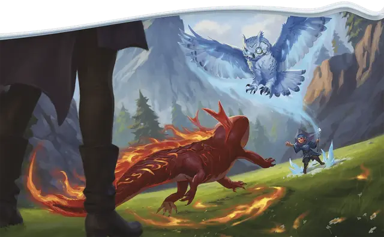

Стихийный фамильяр
Elemental Familiar
Универсальная черта (Требования: 4 уровень, черта Друг-фамильяр)

Вы получаете следующие преимущества:
Повышение характеристики. Увеличьте значение одной из ваших характеристик на 1, но не выше 20.
Стихийная энергия. Вы узнаёте, как наполнить вашего фамильяра силой стихий. Когда вы сотворяете заклинание Обретение фамильяра, выберите тип урона: Звук, Кислота, Огонь, Холод или Электричество. Ваш фамильяр напитывается этой энергией до тех пор, пока вы снова не сотворите Обретение фамильяра; пока фамильяр напитан энергией, он получает следующие преимущества:
Стихийное сопротивление. Ваш фамильяр получает Сопротивление выбранному типу урона.
Волна энергии. Бонусным действием вы приказываете своему фамильяру выплеснуть стихийную энергию. Ваш фамильяр должен находиться в пределах 120 футов от вас и использовать свою Реакцию, чтобы высвободить эту волну. Каждое существо в 5-футовой Эманации, исходящей от вашего фамильяра, совершает спасбросок Ловкости (Сл 8 + ваши модификатор характеристики, выбранной для сотворения заклинания Обретение фамильяра, и Бонус владения). При провале существо получает 2к4 урона выбранного типа и, если оно Среднего размера или меньше, Опрокидывается.